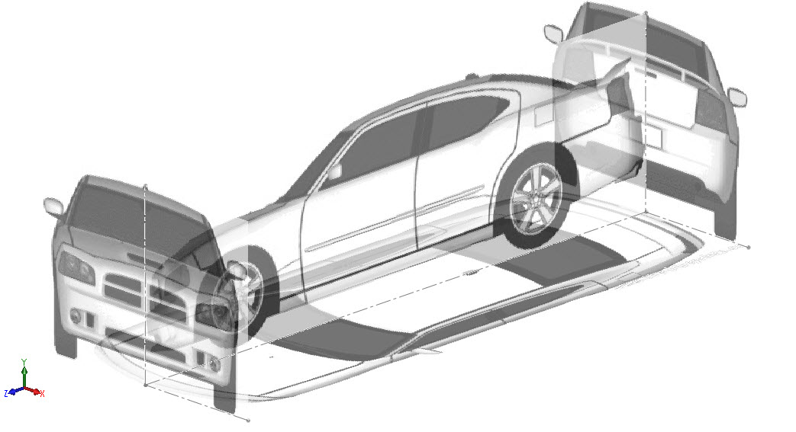

Dodge Charger



Personal SolidWorks project recreating the third-generation Dodge Charger from reference photos — full exterior surfacing, headlight and grille detailing, and a rendered studio pass to test lighting and materials.